Hi Abhiram.V Here
root@anon:~# WHOAMI
I am ABHIRAM V, a B.Tech Graduate who is into cyber security research,
I do bug bounty hunting, Capture The Flag as a hobby and passion, i am from Kerala, India. 🇮🇳
About Me
I am an Information security enthusiast and who loves to do research on the topics related to InfoSec and Pentesting. Iam a Bug Bounty Hunter, a CTF Player and a Content creator. I try and work to improvise my knowledge through reading various blogs, writeups and resources from several Hacker community and forums.
As a Security Enthusiast, my major includes Web Security and Network Security. Now i tend to explore Exploit development too.
As a Bug Bounty Hunter I like to secure renowned companies digital products on the Internet and Opensource products. It has just been few months since i start doing Bug bounty hunting but within this time, I have been acknowledged by organizations like Dell,Indeed,Upwork,Telekom etc.
As a CTF Player i love to work in Hackthebox and Im a GURU Rank holder in the same
as a part of this i did Pentester Lab Pro and earned considerable amount of badges from there.
As a Content Creator, I love to develop CTF for the public, share my knowledge, experiences and findings through blogs and several social media platforms. I love to travel as it provides me a peace of mind and by doing so i collect memmories by taking pictures of beautiful places and loved ones and even anything i find curious out there.
Achievements
Top 20 in the world in Cyberwraith Challenge in Defcon
Volunteered for the Defcon 28 as a part of Red Team Village
Coordinated Asian region fo Cyber Jungle Virtual Summit
Cyberdome Kozhikode CTF 2021 Writeup
Cyberdome Kozhikode organized this year's cyber security conference 'Cyber Security Summit 2021' virtually on Feb 27th and Feb 28th. On behalf of the summit, we conducted a Capture The Flag (CTF) event.
Here is a brief writeup about the challenges that I had contributed in for the event.
I had created 2 CRYPTO challenges
1. Hacked Shares
2. Not a normal RSA
and a single WEB challenge
The Serial Killer
Let's start with CRYPTO.
Let us start from Hacked Shares
Here is the description:
The Description and challenge name contain some hints, let's check the same
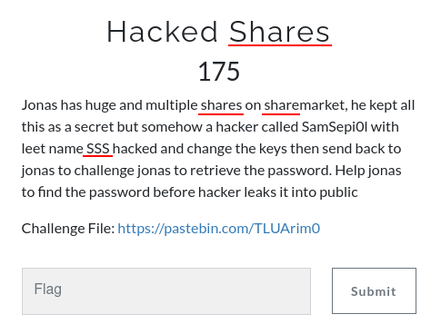
I had repeated the word 'shares' thrice and the hacker's leetname is specified already ie,SamSepi0l and again given SSS as leet name, which is not normal and suspicious too. The challenge contains a file, let's see what is inside of it
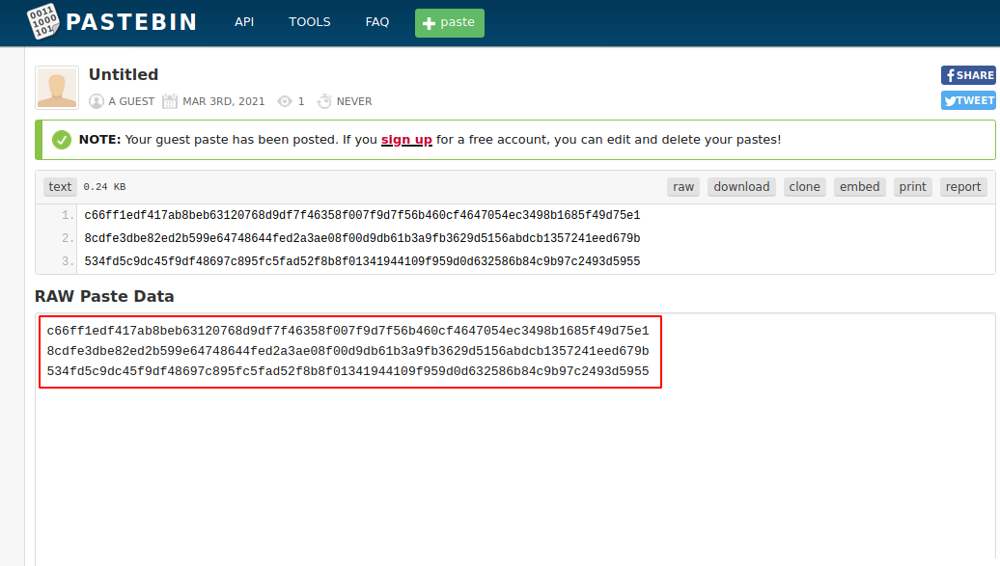
If you are familiar with 'Shamir Secret Share', it is super easy to solve the challenges, otherwise just searching the Keywords+Cryptography will point that out that this is a Shamir Secret Share.
For example:
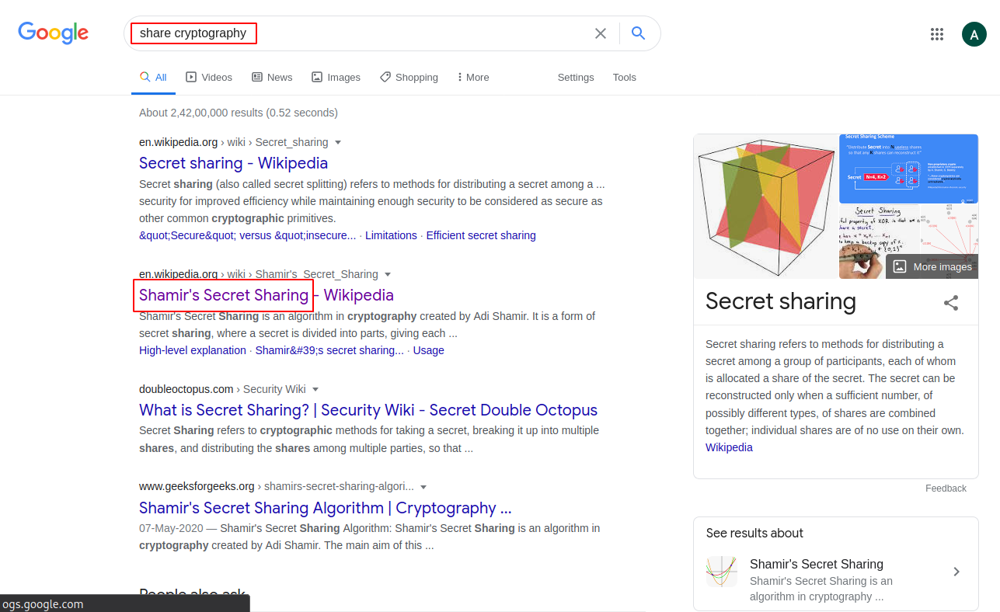
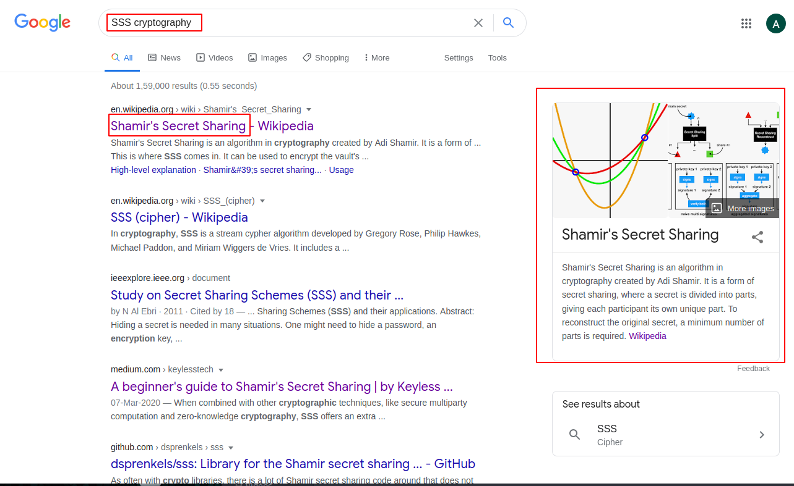
Now let us search how to decrypt this to plaintext. To do this quickly, just search on GitHub
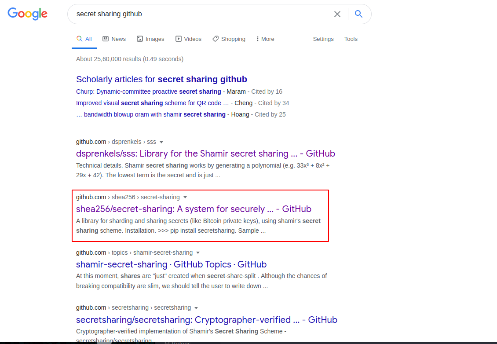
Github Link
From this we can see how to covert this to plaintext
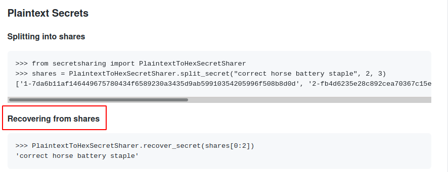
but before that we need to set the three shares in the format they provided, ie,
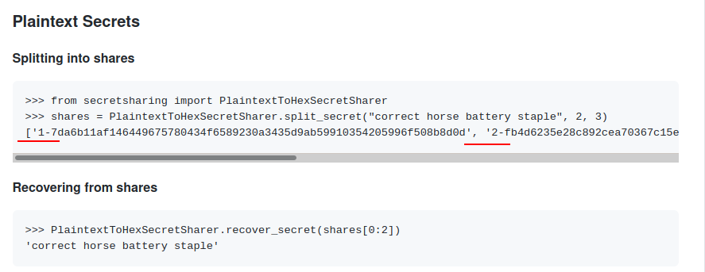
So to decrypt, one just need to write a small python code in Python2, along with them need to install a pypi package 'secretsharing'
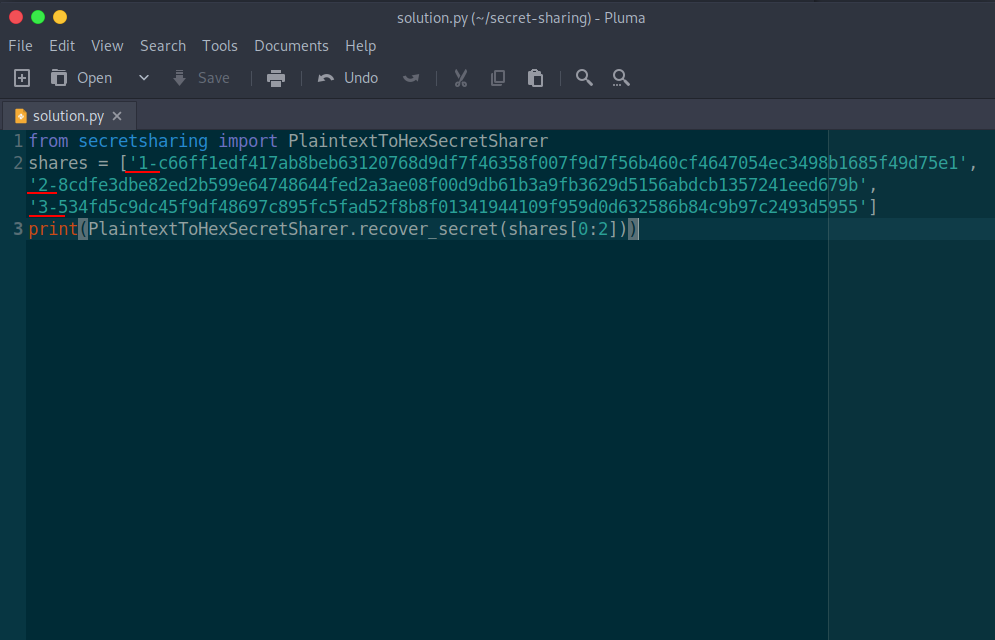
Executing the code in the terminal gives us the flag
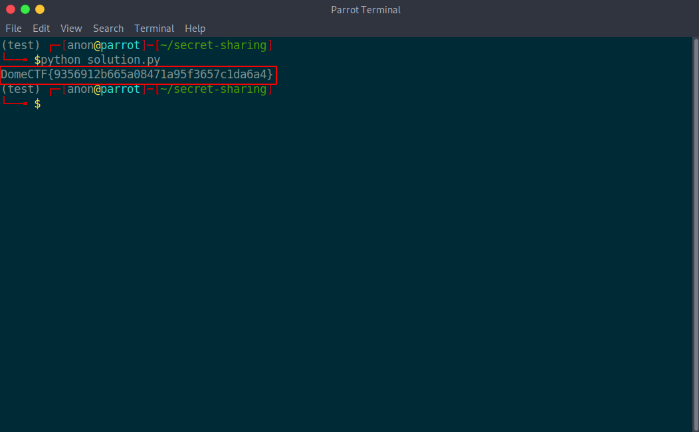
Now lets check how to solve Not a normal RSA
Here is the description:
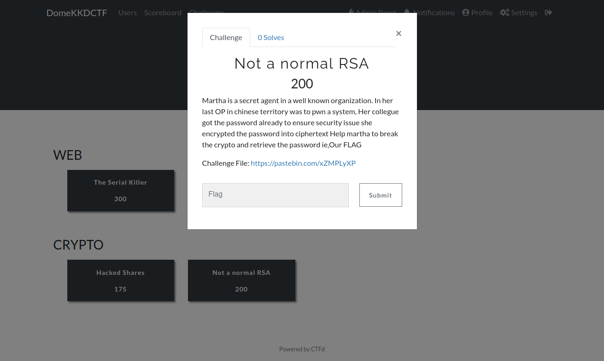
The Description and challenge name contain some hints, let's check the same
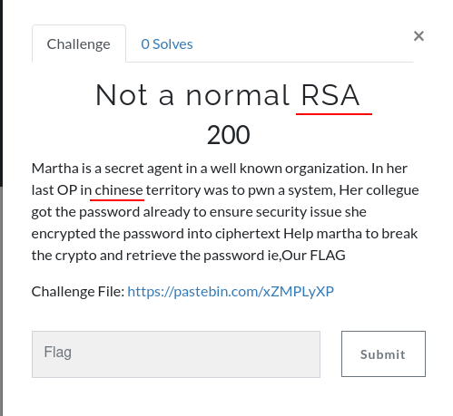
The challenge name says its not a normal RSA, so that we can conclude that its an RSA but not a normal one. The challenge contains a file, let's see what is inside of it
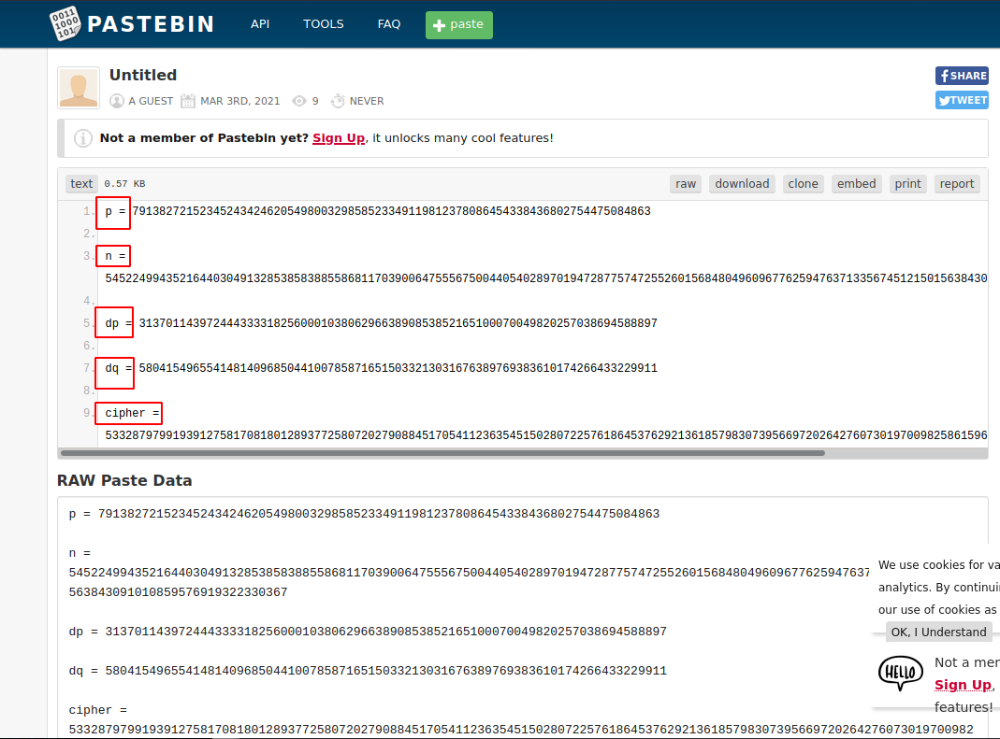
If you are familiar with 'Chinese Remainder Algorithm' then it is super easy to solve the challenges else just searching for the chinese RSA or RSA with dp and dq will point out that this is infact a Chinese Remainder Algorithm.
For example:
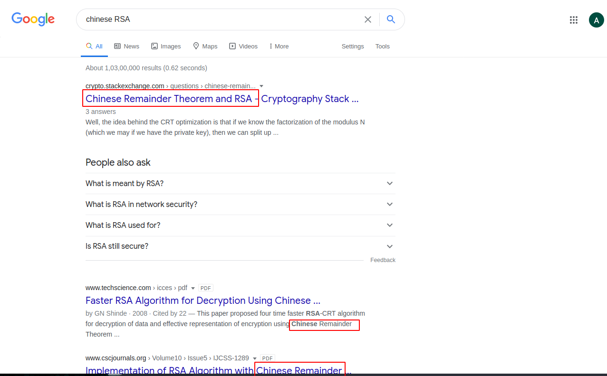
Now let's search how to decrypt this to plaintext
We can see a blog in geeksforgeeks that came up when googled.
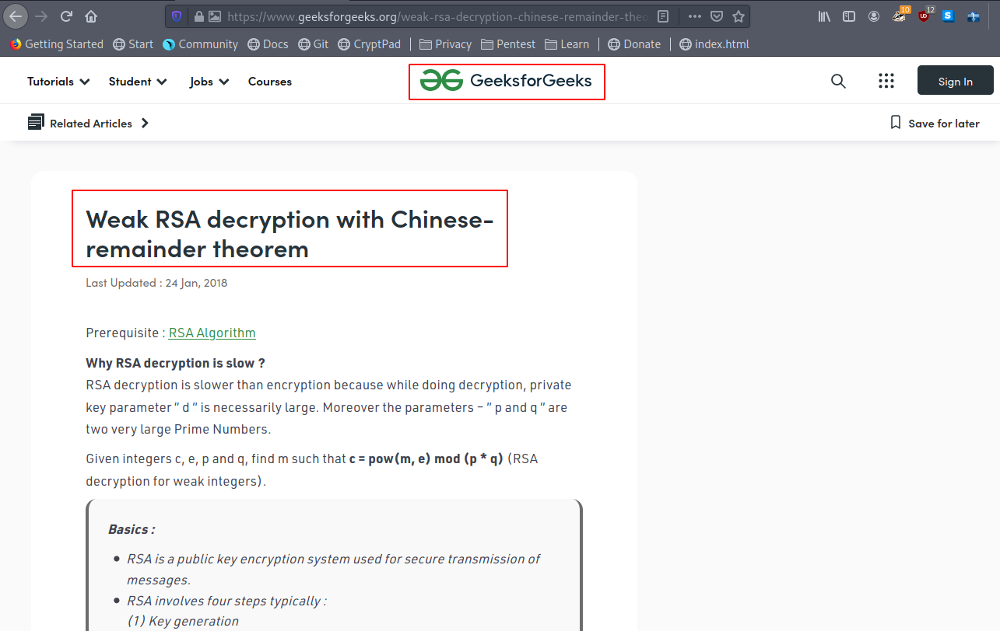
geeksforgeeks Link
From this we can see an encryption/decryption code.
Modify the code
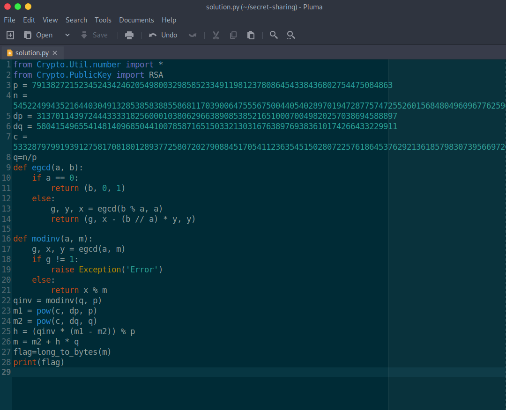
Executing the code in the terminal gives us the flag
Now let's check how to solve The Serial Killer, which is a web challenge
Here is the description:
The description and challenge name contain some hints, let's check it out.
The challenge name and 
contents inside the challenge gives us an idea that it is based on deserialization, Now let's check the page using 'view page source'
It says Todo: Update Yaml Parser. Now we can conclude that its a PyYAML deserialization bug.
Just googling this gives us a lot of informations. Me and my friends Asjid Kalam, Ajmal Aboobacker and Abdul Muhaimin widely exploited this bug and found a lot of zero days in reputed organizations/firms/individuals such as Microsoft, Google, Tensorflow, Facebook Research, Nvidia, Spotify, etc and reported in Huntr.dev
So here i tried to recreate that scenario, You will see a blog about that soon but let's leave it at that for now and let's come back to the challenge.
Here is a problem we face that whenever we giving the payload it gives a 500 error
But reading the contents inside the error gives us a hope that it is intentional and we can assume that the code execution is happening blindly.
So we need to take a reverse shell which is the best way to solve it. To do this, create a malicious yaml file to execute a python reverse shell and read the flag from it.
Now just create a ngrok tcp tunnel and replace the ip in the malicious yaml with ngrok link and ngrok port.
Now convert it into base64 because the challenge says it will only accept base64 code.
Before that, setup a netcat listener to get the reverse shell.
Whoa, we got the reverse shell as root and inside /home directory, we can see the flag
Thanks to Kozhikode Cyberdome, Team Zealabs and YAS Community for giving this opportunity and
THANK YOU for reading my blog post